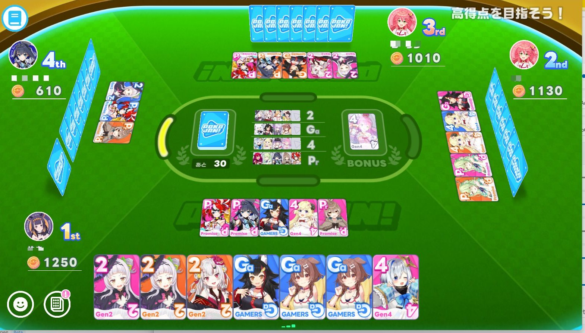
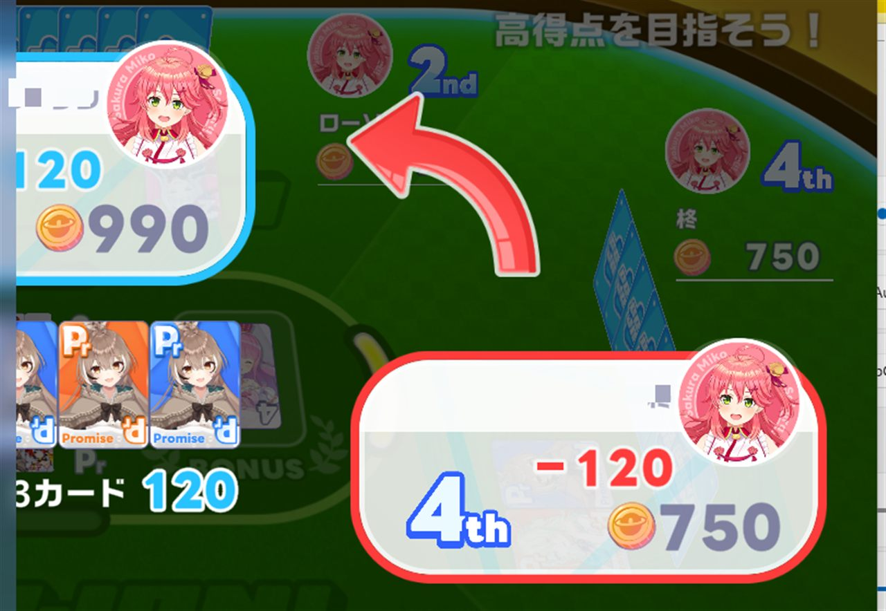

ポカジャンとは
「ポカジャン」は、ホロライブドリームス内で遊べる4人対戦のマルチプレイ対応ミニゲームです。麻雀やドンジャラに近いルールで、「ポカジャン！」仕様の専用カードを使い、ホロメン（推しキャラ）や期生（所属グループ）の組み合わせで役を揃えて、相手のコインを奪い合います。
麻雀との一番の違い：誰かが役を完成させて「ポカジャン」しても、そこでゲームは終わりません。何度でも役を作って上がり続けられる点が最大の特徴です。

ゲームの進行手順
手札7枚からスタートし、以下のサイクルを山札がなくなるまで繰り返します。
-
1
手札7枚を確認する
配られた7枚の手札から、狙える役（同じホロメン3枚 or 同じ期生の組み合わせなど）の候補を見極めます。
-
2
山札から1枚引く
自分の番になったら山札からカードを1枚ドロー。この時点で役が完成していれば「ポカジャン」を宣言できます。
-
3
役が完成していなければ1枚捨てる
不要なカードを1枚選んで捨て札にします。捨てたカードは他のプレイヤーが役の完成に使える可能性があるので要注意。
-
4
他家の捨て札でも役は完成する
自分の番でなくても、誰かが捨てたカードで役が揃うなら「ポカジャン」を宣言可能。麻雀の「フリテン」とは逆で、一度同じカードを見送っていても、後から出た捨て札で改めて上がることができます。
-
5
役が完成したら「ポカジャン」を宣言
役に使ったカードは場に出し、コインを獲得。手札はまた7枚になるまで山札から引き直し、ゲームが続行されます。
コインの獲得方法
ポカジャンを宣言した際、どのカードで役を完成させたかによって獲得コインの相手・金額が変わります。
🎴 自分で引いたカードで上がる（ツモ）
山札から引いたカードで役が完成した場合、全員から少額ずつコインを獲得します。負担が全員に分散されるため、狙われた側のダメージは小さめです。
💥 相手の捨て札で上がる（放銃）
誰かが捨てたカードで役を完成させた場合、そのカードを捨てたプレイヤー1人から多額のコインを獲得します。役の点数がそのまま一人に重くのしかかるため、捨て札選びは非常に重要です。
捨て札は自分の命綱：他家が完成させそうな役を読み違えて放銃すると、一人だけ大量のコインを失うことになります。安全牌の考え方は戦術・安全牌ページで詳しく解説しています。

終了条件と最終順位
🃏 山札がなくなる
山札を全て引き切ると、その時点の所持コイン数で最終順位が決まります。
💸 誰かの持ちコインが0になる
対戦中にコインが尽きたプレイヤーが出た時点でもゲームが終了します。終盤に大きな役へ放銃すると即終了もあり得るため要注意です。
順位による報酬倍率
最終的な着順（＋ベットしたコイン数）に応じて、報酬として受け取るコインに倍率がかかります。1位を取れるかどうかで報酬に大きな差が出るため、終盤の順位争いは非常に重要です。
| 最終順位 | 報酬倍率 |
|---|---|
| 🥇 1位 | 2.5倍 |
| 🥈 2位 | 1.5倍 |
| 🥉 3位 | 1倍 |
| 4位 | 1倍 |
解放条件
ポカジャンはメインストーリー2章8話「真の姿」クリアで解放されます。ストーリーを進めていない場合は、まず該当話まで進めましょう。
プレイヤー情報の見方
対局画面に表示されている各プレイヤーのキャラアイコンをタップすると、そのプレイヤーの詳細情報がポップアップで表示されます。
👆 アイコンをタップ
画面に表示されているキャラのアイコンを押下すると、そのプレイヤーの詳細を示すポップアップ画面が表示されます。
🪙 獲得コイン
ポップアップ内の「獲得コイン」は、今までの対局を通じたコインのプラマイ（収支）を示しています。
🏆 平均順位
「平均順位」は今までの対局の平均順位を示す数値です。2.5位が平均ラインで、2.4位以下なら優秀な成績と言えます。

💬 コメント
ルールについて分かりにくい点や補足情報があれば、お気軽にコメントしてください。